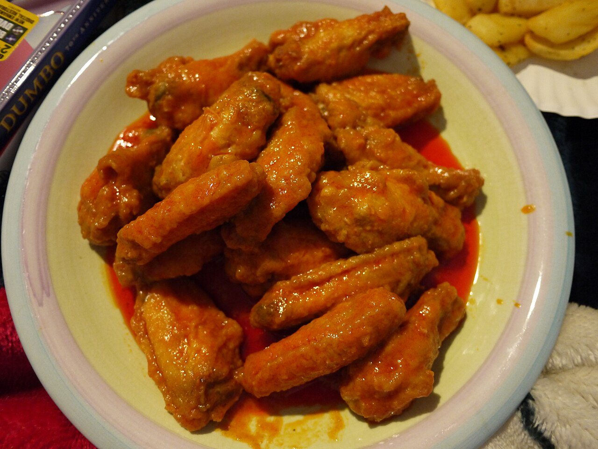

a long oneThe price of a wing
also: What a wing costs

In 1964 the wing was the cheapest thing on the bird, which is the premise every origin story rests on. In the week of 7 to 11 September 2026 it traded wholesale at 110.02 cents a pound, twice the price of a drumstick and ten times the price of the backs and necks that the Anchor Bar story says were supposed to arrive instead. It has been dearer than that: 325 cents a pound in May 2021, when cold storage ran to its lowest level since 2012. Every figure on this page carries its date and whose figure it is, and the ones I could not get are named too.
The cheap end of the bird
Chicken wings were inexpensive and undesirable in the early 1960s, normally thrown away or kept back for stock or soup. That is the condition the Buffalo story turns on and the condition that has been reversed. Inference — the reversal is the dish's doing: a cut only becomes expensive once people order it by name.
Where the numbers come from
Two USDA series carry most of the weight here, and both are free to read.
The Weekly National Chicken Report, from the Agricultural Marketing Service's Livestock, Poultry and Grain Market News, prices parts in cents per pound, domestic, fresh, conventional, FOB, with a weighted average, a range, the week's volume, and the previous week for comparison.
The Weekly Grocery Store Chicken Feature Activity report gives advertised retail prices in dollars per pound, with the number of sampled stores running each ad, drawn from store circulars, newspaper ads and retailer websites.
The National Chicken Council publishes a Chicken Wing Report each January, which is the number newspapers print. It is a trade association's estimate for a single Sunday.
What a wing costs a buyer this week
Weekly National Chicken Report, 7 to 11 September 2026. Wings – Whole: range 82.00 to 136.00 cents a pound, weighted average 110.02, on 507,000 pounds, down 2.35 cents from the previous week's 112.37 on 517,000 pounds.
The rest of the bird, same table, same week, in cents per pound: boneless-skinless breast 121.35, boneless-skinless thighs 148.48, tenderloins 113.50, bone-in thighs 72.89, bone-in legs 71.12, drumsticks 55.35, leg quarters in bulk 52.76, backs and necks stripped 10.91, frames 9.66.
Read down that list against the Anchor Bar's third version of its own story — the one where backs and necks were ordered and wings turned up by mistake. In September 2026 the mistake would have cost roughly ten times what the order did.
2021
USDA's Economic Research Service published the account on 11 March 2022, drawing on its February 2022 Livestock, Dairy, and Poultry Outlook.
Pandemic demand for takeout wings pulled cold storage down to its lowest level since 2012. Supply-chain disruption dropped inventories a further 27% by January 2021. In April 2021 wholesale wing prices ran 180% above a year earlier. They peaked at $3.25 a pound in May 2021. As cold storage recovered from May onward, prices fell through the rest of the year; by January 2022 wings were $2.68 a pound — 24 cents above January 2021, and 49 cents below the 2021 peak.
The inversion, and its reversal
In February 2018 The Counter reported jumbo wings at $2.16 a pound wholesale while boneless breast meat traded at $1.03 — the wing at more than twice the price of the cut a boneless wing is made from. On Super Bowl Sunday 2015 wings had gone for $1.91.
In the week of 7 to 11 September 2026 the relationship has flipped back: boneless-skinless breast at 121.35 cents, wings at 110.02. Inference — a restaurant deciding this month whether to push bone-in or boneless faces a different arithmetic than one deciding it in 2018, and the menu category that got built during the inversion has outlived the price gap that built it.
What a counter charges
Weekly Grocery Store Chicken Feature Activity, issued 11 September 2026, for ads running 5 to 17 September 2026. Prices are dollars per pound, weighted across the stores advertising the item.
Party Wings, Flats and Drums, conventional, fresh, regular pack: $3.27 across 2,022 stores, against $2.93 the previous week and $3.99 a year earlier. Value pack: $2.88 across 1,479 stores. Antibiotic-free regular: $4.67 across 406 stores. Frozen IQF, conventional: $3.28 across 4,614 stores. V-Cut Wings, conventional, regular: $2.66 across 334 stores.
From the hot case, priced per piece rather than per pound: fried or baked bone-in wings in bulk at $0.90 a piece across 1,980 stores. The boneless line shows only a year-ago figure, $0.56 a piece across 15 stores.
The Super Bowl number
The National Chicken Council released its Chicken Wing Report for Super Bowl LX on 28 January 2026: Americans would eat 1.48 billion wings watching the game, about 10 million more than the year before. The release runs the usual comparisons — the wings would circle the planet nearly three times, and hauling them would take more than 3,400 fully loaded semi-trucks.
On price the release cites Wells Fargo's Super Bowl Food Report: retail fresh wings averaging $3.47 a pound on a four-week moving average, down 2.8% year on year. Tom Super, the council's spokesman, is quoted: "I think Bradley Cooper is wrong: Football is for food. Especially when it comes to the Super Bowl, where wings rule the roost."
The release does not publish the method behind the 1.48 billion. Inference — an estimate without its method is a headline, and it is reprinted every January as though it were a count.
What I could not get
A wholesale series that prices a flat apart from a drumette. USDA's report prices Wings – Whole only, and its retail report bundles flats and drums into one line; the foodservice distributors that publish case prices refused this project's requests on 16 September 2026, and Urner Barry's series, which poultry traders use for exactly this, is sold by subscription.
A bar's own posted price. Menus for the Buffalo shops sit behind ordering platforms that serve nothing to a plain request; Bar-Bill and Duff's both refused on 16 September 2026. So the counter prices above are a grocery hot case, not a bar, and they are labelled as such.
A long price series in one place. The USDA reports are weekly snapshots; assembling a run of years from them means collecting week by week, and the ERS chart that does assemble one stops in early 2022.
The particulars
| kind | essay |
|---|---|
| region | The United States |
| confidence | high · updated 2026-09-16 |
Who it runs with
Who talks about it
Where we got it
- Weekly National Chicken Report (AMS_3646), report for 9/7/2026 to 9/11/2026 · link
- Weekly Grocery Store Chicken Feature Activity (AMS_2756), Fri Sep 11 2026, ads ending 9/5/2026 to 9/17/2026 · link
- Rising cold storage supplies of U.S. chicken wings contributed to lower wholesale prices at end of 2021 · link
- Americans to Eat 1.48 Billion Chicken Wings for Super Bowl LX · link
- Boneless chicken wings: It's not a lie if you believe it — Sam Bloch · link
- Chicken Wing Report — National Chicken Council · link
- Buffalo wing · link
Where it came from: Cited a source we name · Harvested pulled from an open dataset · Tradition what the tradition says, hedged · Inference this project's reasoning · Field somebody stood there. This record as JSON.